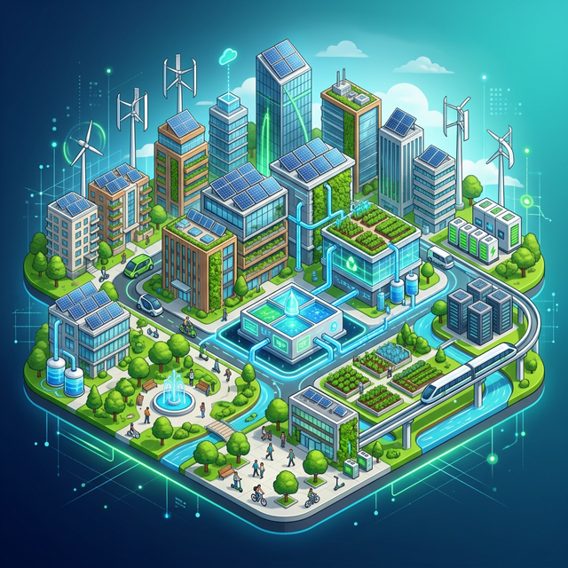
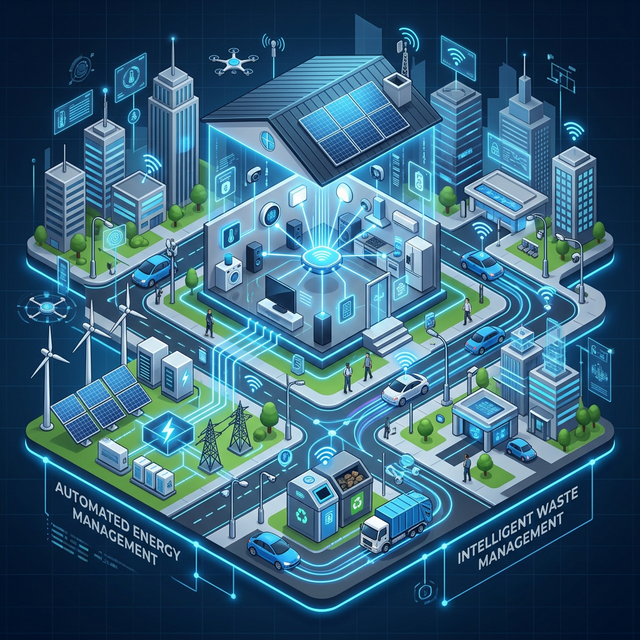

Robotics
Push boundaries with intelligent, versatile machines.
Avg. Innovation in interaction, AI, and automation.


Push boundaries with intelligent, versatile machines.
Avg. Innovation in interaction, AI, and automation.

Transform travel with smart destinations & immersive experiences.

Enhance safety, efficiency, and connectivity in transportation.

Sustainable solutions for resource conservation & clean energy adoption.

Innovate health tech to encourage physical activity & well-being.

Improve patient care with advanced diagnostic & treatment tools.

Revolutionize farming for food security & precision management.

Driving sustainability through innovative eco-friendly solutions.

Automate everyday life with intelligent systems & IoT solutions.

Enhance learning experiences with accessible tech-driven solutions.